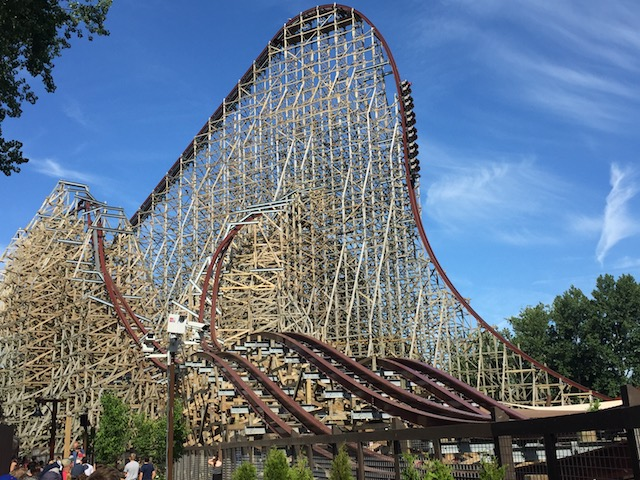

| |
Steel Vengeance Review

Today at Incrediblecoasters, we're going to be reviewing Steel Vengeance at Cedar Point. Now this is a Rocky Mountain Makeover, where they take an old busted sh*tty wooden coaster and turn it into a kickass crazy steel coaster. Now you know me. I love the RMCs. They're all great rides. Even the worst ones are still pretty damn good. But this isn't just another RMC conversion. Nope, this is taking one of my least favorite coasters out there, completely redoing it, and turning it into not just a great coaster like all the other RMCs, but one of the best coasters on the freaking planet. No seriously. Steel Vengeance is that good. It's damn near unbelievable at how much I love this ride. And of course, due to being at Cedar Point, the roller coaster enthusiast hub, it's getting all the love and praise that all the Cedar Point coasters get, except this time, it's actually all merited. So yeah. Let's get riding and see just how good this ride is. We hop in the cars, buckle the seatbelt, pull down the lapbar, and we're off! We roll around a turn (it slightly goes downhill), and then go into a couple bunny hops before the lifthill. And of course, since this is an RMC, these bunny hops are chock full of airtime! But on Steel Vengeance, this is nothing. Not even an appetizer. Just climb up that lifthill, and the goodness will soon commence. You get a nice view of Lake Erie on one side, and Magnum XL 200 on the other. But look down, and all you see is a mess. A big twisted mess that looks like a kindergardeners scribbles. We get to go through all that. Oh boy. We then reach the top, and just drop. The first drop is kind of similar to that on all other RMCs. A very steep drop with a lot of airtime, except there's one difference between Steel Vengeance and the other RMCs. It's much bigger. You see, Steel Vengeance technically classifies as a hyper coaster, so that damn near vertical drop, it's about the same size as Magnum XL 200. And you're out of your seat the entire time. And you gain A LOT of speed. So yeah. You're really f*cking flying at this point. And what generally comes after a hyper coaster drop, when you're travelling at around 75 mph? Usually some sort of major hill. Not on Steel Vengeance, it just goes through this tiny little bunny hop, about the same size as the ones we went through on the pre-lift. Now, there are other RMCs that also do this. But this ride is practically double the size and has a lot more speed. So that strong pop of airtime is even stronger on Steel Vengeance. And now comes that giant hill that follows most hyper coasters. Except one thing is different on this hill. It's an outward banked hill! So you're not only getting some decent airtime, but you're also getting laterals. A combination that I love. But you're not just getting airtime and laterals, but those laterals are in the wrong direction. So that makes it even better. And we're not even close to the best part of Steel Vengeance. We then head into another airtime hill, but with laterals in...HOLY SH*T!!! THIS IS A STENGAL DIVE!!!! AN OUTWARD BANKED STENGAL DIVE!!!! F*CKING AWESOME!!!! OK, This stengal dive isn't quite as strong as the ones on Maverick. But A: That's another one of the best coasters on the planet. So yeah. It's gonna be hard to compete (But Steel Vengeance does). B: It's still outward banked, which is still really cool. We then rise up into a small, but not tiny hill, and we just get EJECTED from our seats. The airtime is incredibly strong here. We then head into the first Zero G Roll. And just like the airtime, this sh*t is STRONG!!! You just get WHIPPED here. And we still haven't reached the peak point of the ride. We then head around a banked turn. Enjoy this, as this is about as close to a breather monent as you're gonna get. We have a tiny little wave hill here. Fun, but nothing compared to what's coming up. Now this next element is my personal favorite moment on Steel Vengeance and just might be one of my favorite moments on ANY roller coaster. We go through the second Zero G Roll, and yeah. That gives us some great whip and all. Except, this thing is only half of a Zero G Roll. Yeah, it starts out as one, but instead of completing the roll, it exits out the roll in the exact opposite direction. The closest thing to this on any coaster would be the Lagoon Roll on Cannibal. Except this is WAY BETTER (And I really like the Lagoon Roll) simply because of the fact that you just FLY through this element. Let me put it this way. If normal Zero G Rolls are like a corkscrew, then this is the Zero G Roll equivelant of a cutback. And the forces this thing produces, GOD DAMN!!! I mean, I got smacked in the head here. But the element is so amazing that I don't care! We then head down another hill, giving us another pop of CRAZY EJECTOR AIR!!! We then go through a double up, giving us more great airtime, before we hit the midcourse brakes. A: DAMN!!! Most RMCs are so short that they don't need a midcourse brake. The closest thing to a midcourse brake on any RMC would be the 2nd lifthill on Twisted Collosus. I mean, this still would be up there if this was the entire ride. But nope. Steel Vengeance has a lot more tricks up its sleeve and a lot more insanity waiting for us. B: This doesn't even feel like a midcourse brake. Let's call this what this really is. Some straight track with a trim. So we maintain most of our speed coming off here, and oh boy. We're gonna put it to good use. We roll around a turn and drop to the ground. AIRTIME!!! We then go through a curved hill before doing a double up. Damn. Steel Vengeance really likes its ejector air. Drop back down, and it looks like Steel Vengeance then decides to just flat out steal the Wave Hill from Outlaw Run. But nope. It starts out as a sideways airtime hill, but you know Steel Vengeance. It's favorite thing to do is to change direction and go back to being a normal hill for the 2nd half. Now I really like this, but I'm torn whether I prefer this or the pure Wave Hill on Outlaw Run. Either way, both are awesome. We then head into an overbanked turn under the structure, and hey. It's pretty strong. And then, it just WHIPS you through another Zero G Roll. Damn. I really am liking this. And Steel Vengeance just keeps on going! We then head through two more airtime hills. BOTH WILL EJECT YOU OUT OF YOUR F*CKING SEAT!!! We then head back under the structure and into another Overbanked Turn. This is of course, followed by another Zero G Roll for us to be thrown through and another overbanked turn that we easily shred. I have heard the complaint that the ride becomes repetitive at this point. And...I see where they're coming from. But come on!!! The elements repeated are AWESOME!!! And I just love how Steel Vengeance keeps going and going and going and going and gong and going and going and going and F*CKING GOING!!! I never get tired of it. But hey. If you're tired of the ride, then Steel Vengeance will just throw you off. Yeah. No more playing around. It's just gonna f*cking EJECT you! Seriously, these hills are almost as strong as the Rolling Thunder Hill on El Toro. Ejector Hill #1. DAMN!!! They're still here! Ejector Hill #2. Come on! I was even stronger this time! Ejector Hill #3. These poor bastards better be grateful for that lap bar keping them alive. Ejector Hill #4. I can't keep joking anymore! The airtime is just so damn good! And we get one final pop of INSANE EJECTOR AIR as we cruise into the brake run. And then we clap. We cheer. We applaud. That was so damn good. One of the best coasters on the planet. And with Maverick, another one of the best coasters on the planet not only in the same park, but the same corner of the park, you're never gonna wanna leave Frontiertown. It's so good. So f*cking good.
10/10
Location: Cedar Point
Opened: 2018
Built by: Rocky Mountain Coasters
Last Ridden: June 26, 2018
Here's my raw footage video of Steel Vengeance.
Steel Vengeance Photos


Home
|